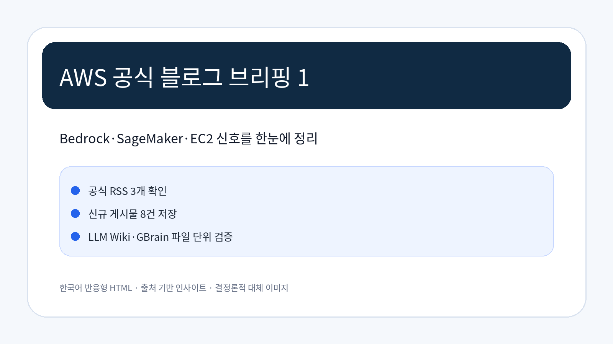
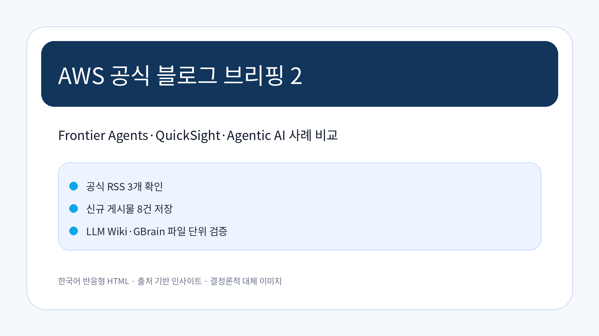
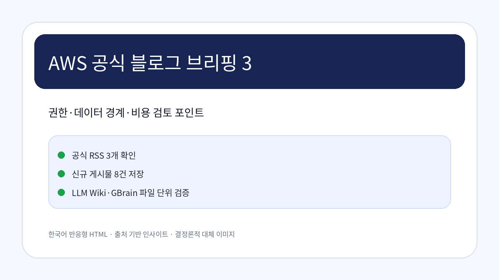

Amazon Bedrock 업데이트와 기업 적용 시사점
공식 AWS Machine Learning Blog에 게시된 AI/ML 관련 업데이트입니다. 원문 기준으로 기술 변화와 기업 적용 시 고려할 의사결정 포인트를 분리해 확인했습니다.
원문 보기공식 출처 기반 · 2026-08-28 07:01:00 KST
이번 실행에서 신규 수집·저장된 공식 블로그 글을 근거로 작성했습니다.
AWS Korea Tech Blog, AWS News Blog, AWS Machine Learning Blog의 RSS를 우선 확인했습니다. 아래 내용은 저장·동기화 검증이 끝난 source-summary를 근거로 작성했으며, 확인이 필요한 부분은 과장하지 않았습니다.
공식 AWS Machine Learning Blog에 게시된 AI/ML 관련 업데이트입니다. 원문 기준으로 기술 변화와 기업 적용 시 고려할 의사결정 포인트를 분리해 확인했습니다.
원문 보기공식 AWS Machine Learning Blog에 게시된 AI/ML 관련 업데이트입니다. 원문 기준으로 기술 변화와 기업 적용 시 고려할 의사결정 포인트를 분리해 확인했습니다.
원문 보기공식 AWS Machine Learning Blog에 게시된 Compute 관련 업데이트입니다. 원문 기준으로 기술 변화와 기업 적용 시 고려할 의사결정 포인트를 분리해 확인했습니다.
원문 보기이 글은 AWS Frontier Agents 시리즈의 세 번째이자 마지막 편입니다. 1편에서 배포 전 릴리스 리스크를 차단하고, 2편에서 배포 후 보안을 검증했다면, 이번 글은 운영 중인 워크로드의 비용 이상을 자동으로 조사하는 AWS FinOps Agent를 다룹니다. 비용 급증 알림은 받지만 “왜 올랐고 누구 책임인지
원문 보기AI 코딩 도구의 확산으로 Pull Request가 만들어지는 속도는 폭발적으로 빨라졌지만, 이를 검토하고 테스트하는 속도는 여전히 사람의 손에 머물러 있습니다. 이 글에서는 AWS Frontier Agents의 개념과 구성을 소개하고, AWS DevOps Agent에 새로 추가된 Release Management(Pre
원문 보기이 글은 AWS Frontier Agents 시리즈의 두 번째 편입니다. 1편에서 다룬 배포 전 릴리스 검증에 이어, 이번 글은 배포된 애플리케이션의 보안을 검증하는 AWS Security Agent에 대한 내용을 다룹니다. 일반적으로 연 1~2회 수행하는 외주 침투 테스트만으로는 매일 배포되는 애플리케이션의 보안 변화를
원문 보기금융권은 전자금융감독규정에 따라 개발망과 운영망을 분리(망분리)하고, 변경 사항을 하위 환경에서 상위 환경으로만(정방향) 전파하도록 통제합니다. 실제 배포 경로는 연구개발망(RND) → 개발계(Dev) → 검증계(STG) → 운영계(PRD) 한 방향이며, 역방향 배포(예: PRD→STG)나 상위 환경에서의 직접 수정은 허
원문 보기본 블로그는 LG CNS 와 AWS 가 공동 작성하였습니다. 품질보증 담당자가 QMS, LIMS, SAP, EDMS를 오가며 자료를 모으고 APQR 리포트 한 건을 완성하는 데는 약 12시간이 걸렸습니다. 종근당과 LG CNS는 Agentic AI로 이 시간을 약 1시간으로 줄였습니다. LG CNS는 AWS 프리미어 파트
원문 보기


이번 근거 묶음에서는 AI/ML, 데이터 처리, 클라우드 서비스 업데이트가 주된 관찰 축입니다. 기업은 새 기능 자체보다 현재 권한 모델, 데이터 경계, 비용 예측, 기존 모니터링 체계와 맞물리는 지점을 먼저 검토해야 합니다.
한국 기업이 적용을 검토할 때는 리전·데이터 거버넌스·내부 보안 심사·감사 로그 확보 가능성을 공식 문서와 함께 재확인해야 합니다. 수집 데이터만으로 특정 산업별 적합성을 단정하기 어려운 항목은 확인 필요로 남깁니다.
IAM, 서비스 역할, 외부 연동 범위를 사전에 문서화해야 합니다.
기능 도입 전 요청량, 저장량, 관찰성 로그 비용을 함께 산정해야 합니다.
관찰된 사실: AI/ML 범주의 공식 AWS 블로그 글이 확인되었습니다.
기업 의사결정 시사점/리스크/기회: 실제 적용 전 지원 리전, 권한·데이터 경계, 비용 산정, 기존 운영 도구와의 통합 가능성을 검토해야 합니다.
관찰된 사실: AI/ML 범주의 공식 AWS 블로그 글이 확인되었습니다.
기업 의사결정 시사점/리스크/기회: 실제 적용 전 지원 리전, 권한·데이터 경계, 비용 산정, 기존 운영 도구와의 통합 가능성을 검토해야 합니다.
관찰된 사실: Compute 범주의 공식 AWS 블로그 글이 확인되었습니다.
기업 의사결정 시사점/리스크/기회: 실제 적용 전 지원 리전, 권한·데이터 경계, 비용 산정, 기존 운영 도구와의 통합 가능성을 검토해야 합니다.
관찰된 사실: Korea Tech 범주의 공식 AWS 블로그 글이 확인되었습니다.
기업 의사결정 시사점/리스크/기회: 실제 적용 전 지원 리전, 권한·데이터 경계, 비용 산정, 기존 운영 도구와의 통합 가능성을 검토해야 합니다.
관찰된 사실: Korea Tech 범주의 공식 AWS 블로그 글이 확인되었습니다.
근거 출처 URL: https://aws.amazon.com/ko/blogs/tech/aws-frontier-agents-part1-devops-agent-release-management
기업 의사결정 시사점/리스크/기회: 실제 적용 전 지원 리전, 권한·데이터 경계, 비용 산정, 기존 운영 도구와의 통합 가능성을 검토해야 합니다.
관찰된 사실: Korea Tech 범주의 공식 AWS 블로그 글이 확인되었습니다.
근거 출처 URL: https://aws.amazon.com/ko/blogs/tech/aws-frontier-agents-part2-security-agent-on-demand-pentest
기업 의사결정 시사점/리스크/기회: 실제 적용 전 지원 리전, 권한·데이터 경계, 비용 산정, 기존 운영 도구와의 통합 가능성을 검토해야 합니다.
| 기사 | 게시 | 카테고리 | 링크 |
|---|---|---|---|
| Amazon Bedrock 업데이트와 기업 적용 시사점 | 2026-08-28 | AI/ML | 원문 |
| Amazon SageMaker 관찰성 강화와 모니터링 검토 포인트 | 2026-08-28 | AI/ML | 원문 |
| EC2 업데이트와 기업 적용 시사점 | 2026-08-28 | Compute | 원문 |
| AWS Frontier Agents로 시작하는 자율 운영 – Part [3]: FinOps Agent로 비용 이상 자동 조사 | 2026-08-27 | Korea Tech | 원문 |
| AWS Frontier Agents로 시작하는 자율 운영 – Part [1]: DevOps Agent Release Management… | 2026-08-27 | Korea Tech | 원문 |
| AWS Frontier Agents로 시작하는 자율 운영 – Part [2]: Security Agent로 침투 테스트를 온디맨드로 | 2026-08-27 | Korea Tech | 원문 |
| Amazon QuickSight 분석을 망분리 환경에 정방향 배포하기 | 2026-08-27 | Korea Tech | 원문 |
| LG CNS의 Agentic AI를 활용한 APQR 시스템 설계 및 자동화 구축 사례 | 2026-08-27 | Korea Tech | 원문 |
이미지 모드: 로컬 PNG fallback(결정론적 렌더링)